Hub users
Collections
Collections are a scrapbook. You make a collection, then pin images, files and links into it as posts. You can follow other people's collections, collect their posts into your own, like them and comment on them. Administrators manage the same content from the Collections chapter of the Hub managers book.
Where collections live
There are three places collections appear, and they show the same content:
| Place | What it is |
|---|---|
https://yourhub.org/collections |
The hub-wide view. Every published collection and post you are allowed to see |
https://yourhub.org/members/{your ID}/collections |
Your own Collections tab, where you create and manage your collections |
| A group's Collections tab | Collections owned by a group rather than a person |
The hub-wide page has two tabs, N collections and N posts. Its New collection and New post buttons take you to your own Collections tab, because a collection always belongs to a member or a group.
Posts, collections and items
A post is one piece of content placed in one collection. A post carries a title, a description, tags, and one or more attachments — an uploaded file or a link.
A collection is a named board that holds posts. A collection has a privacy setting, a layout and a sort order. You must have a collection before you can post into one; if you have none, the hub creates a private collection called Favorites for you the first time you need one.
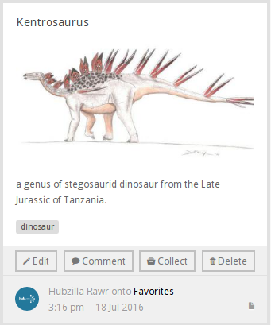
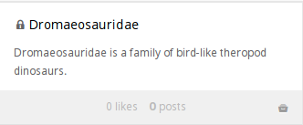
Behind both sits an item: the content itself. The same item can be posted to many collections. The first post of an item is the original; the rest are reposts. That is what happens when you Collect something — the item is re-posted into a collection of yours, and the original is untouched.
Collecting a collection works the same way, but the new post is a link back to the collection you collected.
Your Collections tab
Go to your profile and open the Collections tab. Five tabs run across the top:
Recent Posts — a live feed of posts from the members and collections you follow. This tab only appears on your own profile.
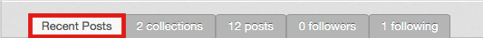
N collections — every collection you own. Create, edit and delete them here.
N posts — every post you have made, across all your collections.
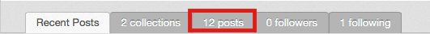
N followers — the members who follow you or one of your collections. Followers never see your private collections.
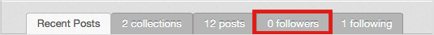
N following — the members and collections you follow, each with an Unfollow button.
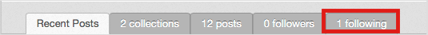
A Getting started button at the top right of each tab opens a short explanation of what the tab is for.
Creating a collection
- Open the Collections tab on your profile.
- Select the collections tab, then New collection.
- Set Privacy. There are three settings, not two:
- Public (anyone can see this collection)
- Registered (logged-in users can see this collection)
- Private (only I can see this collection) — private collections show a padlock on the card.
- Fill in Title. It is the only required field.
- Add a Description and Tags if you want them.
- Choose Layout of posts — Grid or List — and How posts are sorted — Created date (newest to oldest) or Defined ordering.
- Select Save.
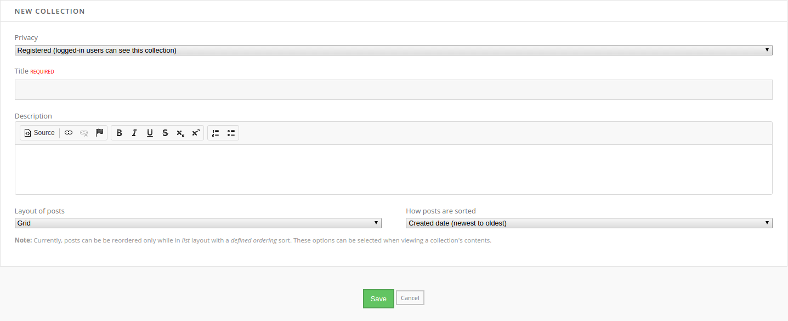
The screenshot above predates the Tags field, which now sits between Description and the layout and sort drop-downs; nothing else on that screen has changed.
Editing and deleting a collection
Hover over a collection on your collections tab. Edit and Delete appear on the card.
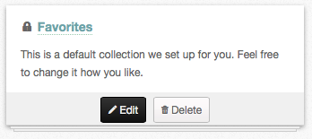
Edit opens the same form as New collection. Delete asks you to confirm — tick Yes, I want to delete this collection. and select Delete. Deleting a collection deletes its posts.
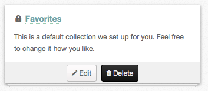
Creating a post
- Open a collection, or the posts tab, and select New post.
- Add the content. The form has two drop targets side by side: Click or drop file on the left uploads a file, and Click to add link on the right takes a URL. You can add more than one of either.
- Fill in Title and Description. A post with no description is refused with Please provide some content.
- Pick the collection under Select collection. If you have no collections yet, the field is replaced by Create collection, which makes one from the title you type.
- Add Tags, separated by commas.
- Select Save.
Editing and deleting a post
Hover over the post. If it is yours, an Edit button appears; if it is somebody else's, you get Like instead. Edit opens the post form again.
The last button on a post you own is either Delete or Remove:
- Delete appears on an original post and destroys the item along with every repost of it.
- Remove appears on a repost and takes it off your collection, leaving the original alone.
Both ask you to confirm before anything happens.
Collecting a post
-
Find a post anywhere on the hub — the hub-wide page, a member's profile, a group.
-
Hover over it and select Collect.
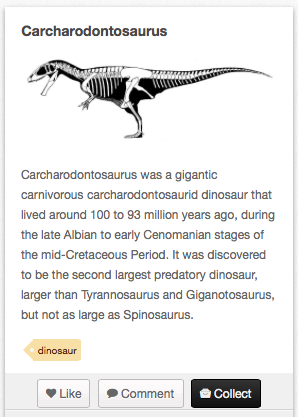
-
Choose a collection from Select collection, or type a name in the Create collection field beside it to make a new one.
-
Add a description, then select Save.
The post is re-posted into your collection. Your own collections and the collections of every group you belong to are listed, grouped by owner.
Collecting a collection
-
Hover over the collection.
-
Select Collect.
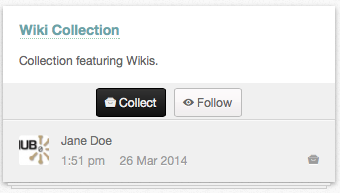
-
Pick or create the collection to save it into, add a description, and select Save.
You get a new post whose content is a link back to the original collection.
Liking a post
Hover over a post you did not make. A Like button appears; select it and the post's like count goes up. The button changes to Unlike, which takes the like back.
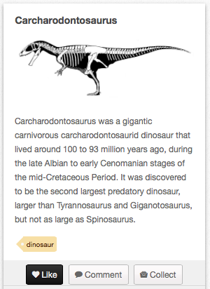
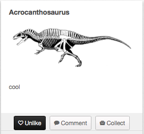
Commenting on a post
- Hover over a post and select Comment.
- Type into the box and select Post comment.
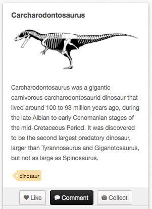
There is no anonymous option on collection comments. Your name and profile picture are shown against whatever you write.
Following
Following a member puts every new post they make, and every collection they create, on your Recent Posts feed. Following a single collection follows just that collection.
To follow a member, open their Collections tab and select Follow All. The button sits at the top right, next to Getting started.
To follow a collection, open it and select Follow, or use the Follow button on the collection's card in a list.
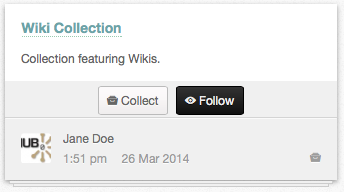
To stop following either one, open your N following tab and select Unfollow on the row.
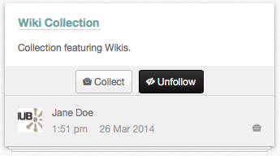
Unfollow All on a member's Collections tab drops that member and all of their collections at once.
Changing the layout and the order
Open a collection. Four icons sit above the posts, to the right of the tabs:
| Icon | What it does |
|---|---|
| Sort by created date | Newest post first |
| Sort by defined ordering | The order you dragged the posts into |
| View as a grid | Posts tiled |
| View as a list | Posts stacked one per row |
These change what you are looking at now. To change what everybody sees by default, edit the collection and set Layout of posts and How posts are sorted.
To reorder posts by hand, switch to View as a list and Sort by defined ordering, then drag a post by the handle on its left edge.
The Collect button on other pages
Collections are not only filled from the collections pages. If an
administrator has published the mod_collect module, a Collect button
appears on content pages across the hub and posts that page straight into one
of your collections. It works on blog entries, articles, courses, forum
threads, knowledge base articles, publications, resources, wiki pages and
wishes — the nine content types listed in the
managers' Collections chapter.
Rewritten and checked against 2.4-main @ 1924c22171 on 2026-09-09.